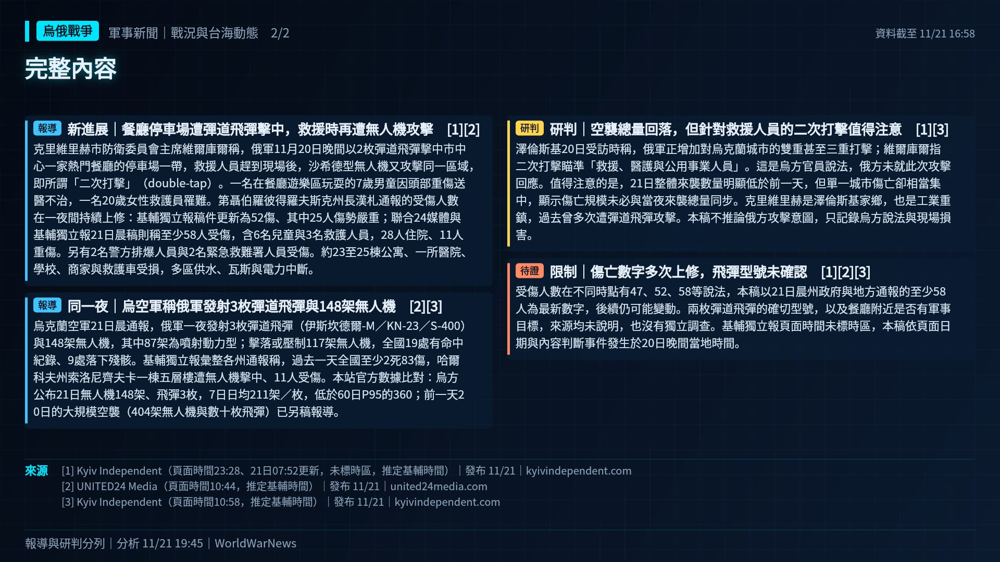

俄軍20日晚以2枚彈道飛彈與無人機「二次打擊」克里維里赫市中心：7歲男童與20歲救護員罹難、逾50人受傷，澤倫斯基稱雙重與三重打擊增加


報導新進展｜餐廳停車場遭彈道飛彈擊中，救援時再遭無人機攻擊
克里維里赫市防衛委員會主席維爾庫爾稱，俄軍11月20日晚間以2枚彈道飛彈擊中市中心一家熱門餐廳的停車場一帶，救援人員趕到現場後，沙希德型無人機又攻擊同一區域，即所謂「二次打擊」（double-tap）。一名在餐廳遊樂區玩耍的7歲男童因頭部重傷送醫不治，一名20歲女性救護員罹難。第聶伯羅彼得羅夫斯克州長漢札通報的受傷人數在一夜間持續上修：基輔獨立報稿件更新為52傷、其中25人傷勢嚴重；聯合24媒體與基輔獨立報21日晨稿則稱至少58人受傷，含6名兒童與3名救護人員，28人住院、11人重傷。另有2名警方排爆人員與2名緊急救難署人員受傷。約23至25棟公寓、一所醫院、學校、商家與救護車受損，多區供水、瓦斯與電力中斷。
報導同一夜｜烏空軍稱俄軍發射3枚彈道飛彈與148架無人機
烏克蘭空軍21日晨通報，俄軍一夜發射3枚彈道飛彈（伊斯坎德爾-M／KN-23／S-400）與148架無人機，其中87架為噴射動力型；擊落或壓制117架無人機，全國19處有命中紀錄、9處落下殘骸。基輔獨立報彙整各州通報稱，過去一天全國至少2死83傷，哈爾科夫州索洛尼齊夫卡一棟五層樓遭無人機擊中、11人受傷。本站官方數據比對：烏方公布21日無人機148架、飛彈3枚，7日日均211架／枚，低於60日P95的360；前一天20日的大規模空襲（404架無人機與數十枚飛彈）已另稿報導。
研判研判｜空襲總量回落，但針對救援人員的二次打擊值得注意
澤倫斯基20日受訪時稱，俄軍正增加對烏克蘭城市的雙重甚至三重打擊；維爾庫爾指二次打擊瞄準「救援、醫護與公用事業人員」。這是烏方官員說法，俄方未就此次攻擊回應。值得注意的是，21日整體來襲數量明顯低於前一天，但單一城市傷亡卻相當集中，顯示傷亡規模未必與當夜來襲總量同步。克里維里赫是澤倫斯基家鄉，也是工業重鎮，過去曾多次遭彈道飛彈攻擊。本稿不推論俄方攻擊意圖，只記錄烏方說法與現場損害。
待證限制｜傷亡數字多次上修，飛彈型號未確認
受傷人數在不同時點有47、52、58等說法，本稿以21日晨州政府與地方通報的至少58人為最新數字，後續仍可能變動。兩枚彈道飛彈的確切型號，以及餐廳附近是否有軍事目標，來源均未說明，也沒有獨立調查。基輔獨立報頁面時間未標時區，本稿依頁面日期與內容判斷事件發生於20日晚間當地時間。
- [1] Kyiv Independent（頁面時間23:28、21日07:52更新，未標時區，推定基輔時間）｜發布 11/21
- [2] UNITED24 Media（頁面時間10:44，推定基輔時間）｜發布 11/21
- [3] Kyiv Independent（頁面時間10:58，推定基輔時間）｜發布 11/21